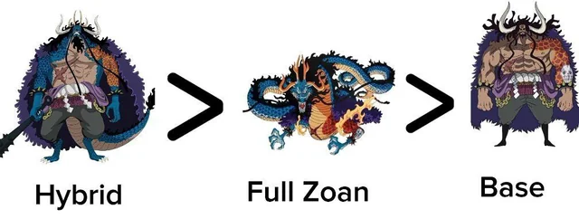
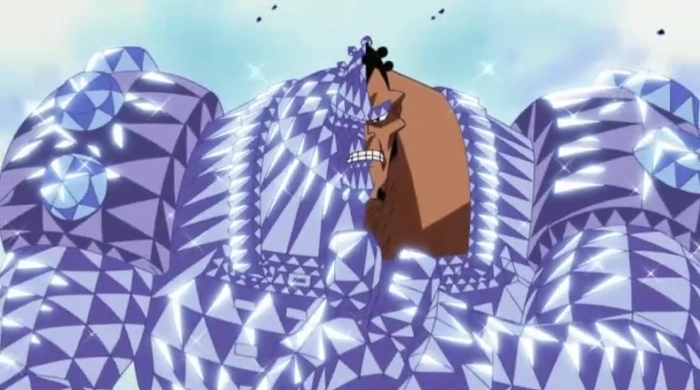

Frutas y sus tipos
Las frutas del diablo (悪魔の実/akuma no mi) son unas frutas misteriosas y peculiares repartidas por el mundo, conocidas por otorgar a sus consumidores poderes sobrehumanos, así como una gran debilidad al agua marina, arrebatando la capacidad de nadar a sus usuarios. Por lo general, un individuo sólo puede adquirir los poderes de una sola fruta del diablo y sobrevivir, existiendo una única excepción notable, hasta la fecha. Cada fruta del diablo otorga un poder especial a quien la come: desde los poderes más simples, como estirarse como la goma, hasta poderes capaces de causar destrucción a gran escala, como la creación de terremotos. Cada fruta del diablo es única y no hay otra igual. Estas frutas se agrupan en tres clases: zoan, logia y paramecia.
Explicacion frutas tipo zoan
Las frutas del diablo de tipo zoan otorgan a su consumidor la capacidad de transformarse en un animal. Además, también permiten adoptar una forma híbrida que mezcla los atributos de la raza del consumidor con los atributos del animal de su fruta. No obstante, existen algunos casos, en donde se ha observado cómo determinados usuarios de una fruta zoan han sido capaces de transformar partes selectivas de su cuerpo en las partes del animal de su fruta, sin llegar a realizar una transformación completa a su forma híbrida o animal, como es el caso de Marco o de Laffitte. Se desconoce si esto es una capacidad exclusiva de determinadas zoan o es una habilidad que todos los consumidores de estas frutas pueden llegar a conseguir con entrenamiento.
Tipos de zoan
Zoan estándar: permiten al consumidor transformarse en un animal o insecto determinado.
Zoan prehistóricas: permiten al consumidor transformarse en un animal extinto, como los dinosaurios.
Zoan míticas: permiten al consumidor transformarse en un ser mitológico. Estas últimas también otorgan a su consumidor las habilidades asociadas al ser mitológico, como la capacidad de escupir fuego que otorga la fruta Uo Uo: modelo seiryu. Las frutas zoan míticas son catalogadas como las frutas más raras del mundo, superando, en ese aspecto, a las frutas de tipo logia.
Paramecias
Las Paramecias son un tipo de Fruta del Diablo que confiere habilidades específicas, variadas y creativas, que van más allá de la transformación en un elemento o animal, permitiendo a los usuarios manipular objetos, crear sustancias, controlar el espacio, o modificar su cuerpo
Tipos de paramecias
Habilidades que afectan al entorno: las paramecia de este tipo permiten a su usuario alterar el entorno que le rodea, como ocurre con la fruta Pamu Pamu, que permite a su consumidor hacer explotar los objetos no-orgánicos que toque.
Habilidades que afectan al cuerpo del usuario: las paramecia de este tipo otorgan una habilidad especial al cuerpo de su consumidor, como ocurre con la fruta Supa Supa, que hace que el cuerpo de usuario se vuelva duro como el acero y le da la capacidad de convertir las partes de su cuerpo en filos de dicho material.
Habilidades que afectan a otras personas: este tipo de paramecia dan a su consumidor la capacidad de afectar, de alguna forma, a otras personas, como ocurre con la fruta Hobi Hobi, que permite al consumidor convertir en juguetes a las personas que toque con sus manos, haciendo que el resto de seres se olviden de su existencia.
Habilidades que permiten la generación de sustancias, objetos o zonas: estas paramecia permiten a sus usuarios crear grandes cantidades de determinadas sustancias u otro tipo de cosas, como ocurre con la fruta Doku Doku, que permite a su consumidor crear grandes cantidades de veneno o como pasa con la fruta Bari Bari, que otorga a su usuario la capacidad de generar barreras extremadamente duras tanto a su alrededor como en zonas alejadas del usuario. Dentro de este grupo, también se encuentran las paramecia que permiten a su usuario generar zonas, en las cuales ejerce un control absoluto de todo lo que se encuentre dentro de ellas, como es el caso de la fruta Ope Ope.
Habilidades que afectan al entorno: las paramecia de este tipo permiten a su usuario alterar el entorno que le rodea, como ocurre con la fruta Pamu Pamu, que permite a su consumidor hacer explotar los objetos no-orgánicos que toque.
Habilidades que afectan al usuario y a otras personas: las paramecia de esta clase dan a su consumidor una habilidad que puede afectarle tanto a él como al resto de personas. Un ejemplo de ello lo tenemos en la fruta Horu Horu, la cual permite a su consumidor producir y manipular a su antojo las hormonas de su propio cuerpo y las de otras personas.
Habilidades que permiten la generación, control y transformación corporal en determinadas sustancias: son un tipo especial de paramecia que se asemejan a las logia, con la diferencia de que estas frutas permiten a sus usuarios generar, controlar y convertir su cuerpo en un elemento no-natural. Por el momento, la única paramecia conocida que otorga habilidades de este tipo es la fruta Mochi Mochi.
Logias
.jpeg)
Al contrario que las anteriores, las logia son de las frutas más raras que existen y otorgan a su consumidor la habilidad de generar, controlar y transformar su cuerpo en un elemento de la naturaleza, ya sean estos sólidos, como la arena o el hielo, líquidos, como el barro o el magma, gaseosos, como el humo o el gas, energía, como la electricidad, o conceptos más abstractos, como la oscuridad. Cabe resaltar que los consumidores solamente pueden controlar el elemento que ellos crean y no aquél que se forma por otras causas. Por ejemplo: el usuario de la fruta Mera Mera puede controlar el fuego que es creado por él, pero no puede controlar el fuego que se ha generado de otra forma. Así mismo, estas frutas permiten a su usuario convertir cualquier parte de su cuerpo en el elemento de su fruta, pudiendo controlarlas con total naturalidad.